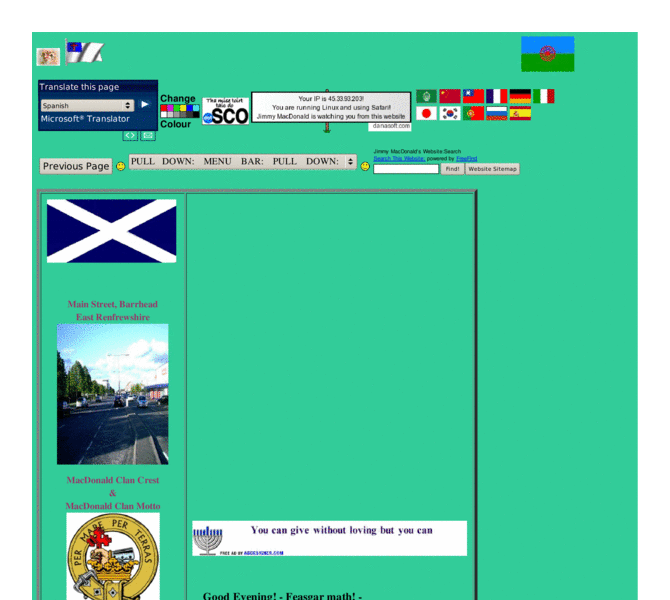

Previewing: Jimmy MacDonald's Website Previewing: Jimmy MacDonald's Website 
Use the left/right red arrow controls to navigate through this ring - Click the preview image to visit the member site.

✞Short personal/family profiles: photos, slideshows, videos, guestbooks, photo guestbook. Scotland's Ethnic People: The travelling people, language, gaelic, beurla reagaird. Spirituality: faith, place of worship, Elim Paisley.✞
Jimmy MacDonald's Website owned by:
 cristean cristean
A member of the original webring since 06/18/2006.
|
|